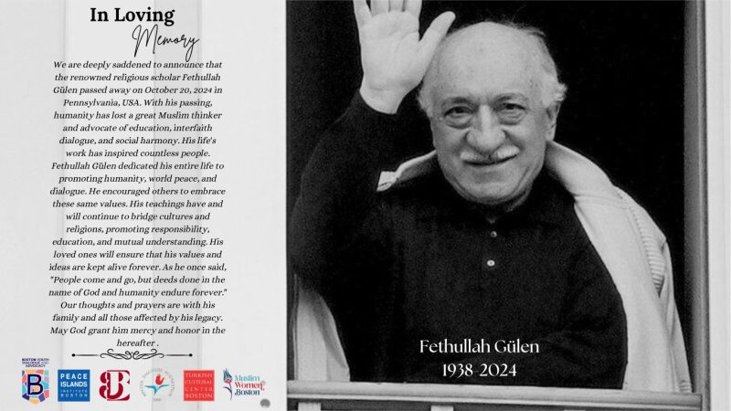
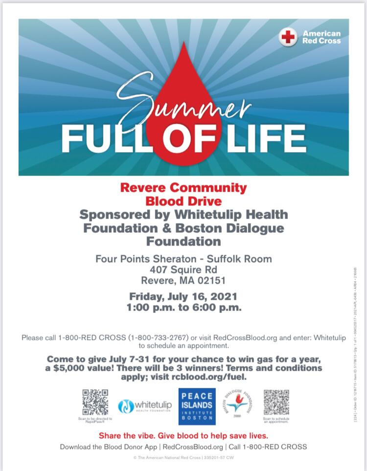
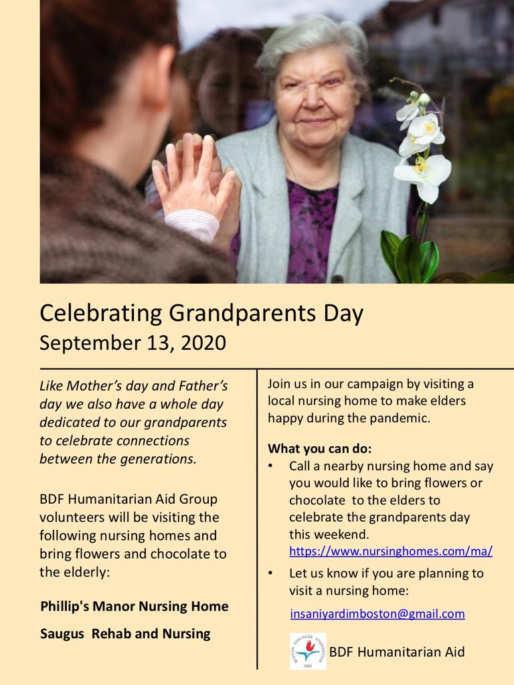

Seminars, celebrations, and community gatherings across Greater Boston
Check back soon, or follow us on Facebook for the latest updates on our next gathering.

January 1, 2025 · Dec 20–25 program
Four Points by Sheraton Wakefield Boston Hotel. A refreshing, inspiring winter experience with engaging programs and meaningful connections, co-hosted with the Turkish Cultural Center Boston.

November 4, 2024
We were deeply saddened to announce the passing of Fethullah Gülen on October 20, 2024. The world lost a visionary thinker and advocate for education, interfaith dialogue, and social harmony. His teachings continue to inspire our work.
August 13, 2024
Hopkinton State Park. Homemade dishes — Kavurma, Pilav, Baklava, and traditional Semaver Çay — a scenic setting for family-friendly fun and community bonding.

June 24, 2024
Hosted by Peace Islands Institute and local representatives — traditional performances, music, and inspiring speeches celebrating unity in diversity.

March 17, 2024
Community-organized food distribution during the holy month of Ramadan, part of our ongoing humanitarian relief work in Revere.
October 4, 2023
A community Eid celebration gathering at Fenway Park.
2023
The Humanitarian Aid group distributed 300 lbs of meat to 50 Revere families for the Feast of Sacrifice, alongside Mayor Brian Arrigo and the City of Revere's Office of Healthy Community Initiatives, which matched each package with fresh produce.
June 16, 2025
Community celebration marking the Feast of Sacrifice.
2025
An evening of classical and traditional Turkish music.

2021
A community summer gathering program.

2021
Honoring grandparents and family elders in our community.